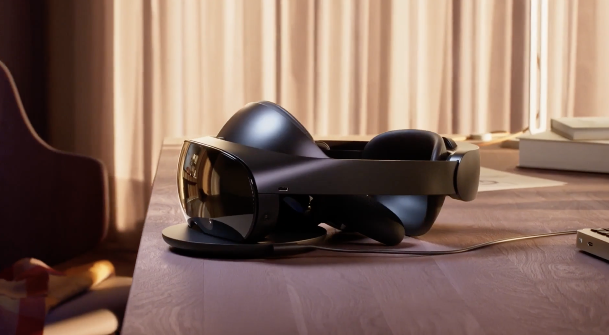
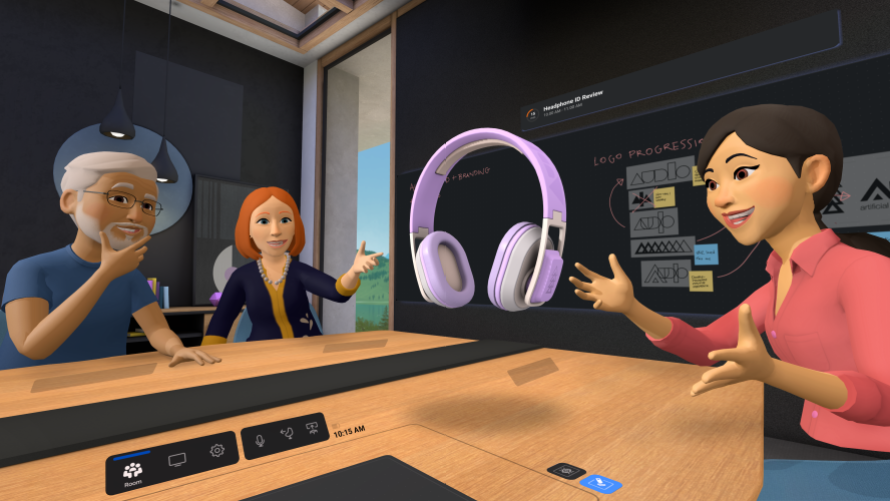

Las Meta Quest Pro, ¿La gran cagada de meta?

Las Meta Quest Pro, lanzadas este ano hacen que los usuarios de estas mismas se debatan en si son una compra
acertada o simplemente es un gasto tonto de dinero.
Especificaciones Tecnicas
Aqui hare una breve lista de las especificaciones mas relevantes de las gafas:
- Resolucion 1800 x 1920 (3.5MP) por ojo, LCD (2x), con un tasa de refresco de 90hz
- Lleva incorporadas 5 camaras internas para la lectura facial y 5 externas para la captura del exterior
- Los tipos de lentes son Pancake non-Fresnel
- El procesador que lleva es el Snapdragon XR2+, acompañado de una de 12GB de Ram y 256GB de almacenamiento
- Tiene conexiones USB-C

Ventajas de las Meta Quest Pro
Las ventajas que trae estas gafas de realidad virtual, tienen un problema serio, debido a que a comparacion de sus competidores como pueden ser las pico 4,
o de sus versiones anteriores traen unas ventajas que suponen un problema, porque estas son realmente poco innovadoras.
Sus ventajas mas claras son: seguimiento de cara y ojos, el passthrough será ideal para la RM, mandos rediseñados y compactos, estación de carga práctica,
obviamente a diferencia de la version Meta Quest 2, la calidad de las pantallas ha mejorado, han reducido el peso de estas y por ello no suponen una carga para largos ratos de uso.
Desventajas de las Meta Quest Pro
Estas gafas destacan entre los usuarios por traer mas desventajas que ventajas, en cuanto a sus versiones anteriores,
esto no quita que haya habido una mejora en cuanto a las versiones anteriores.
Sus desventajas mas claras son: muy caras, pueden terminar resultando incómodas de llevar, no se incluye bloqueador de luz completo,
la que puede provocar mas problemas a la hora de tomar una decision es el precio debido a que este supera los 1500$ llegando a costar en Europa 1800 Euros.
Competidores
En el campo de las gafas de realidad virtual existen pocas marcas y opciones a elegir que realmente tengan posibilidades de competir con la marcas
Meta, por los competidores directos de las Meta Quest Pro se pueden reducir a 3 posibilidades.
El primer competidor es su version anterior las Meta Quest 2, las cuales ofrecen una experiencia muy parecida, pero con ciertos aspectos que las diferencian.
La primera diferencia es a que estan enfocadas cada una, las Pro estan enfocadas al ambito profesional y de trabajo, en cambio las Meta Quest 2 estan enfocadas,
al gaming y al ocio en los mundos virtuales.
Aun teniendo estas diferencias ambas pueden ser usadas para un uso general y no hay problemas al usarlas para aquello que no estan destinadas.
El segundo competidor que podemos destacar
El segundo competidor que podemos destacar son las Pico 4, desarrolladas por Pico estan tienen un diseño y unas caracteristicas muy parecidas a las Meta Quest 2,
pero supera en algunos aspectos a estas ultimas colocandolas mas cerca de las Meta Quest Pro, estas se podrian considerar una mejor opcion que estas ultimas debido a que su precio
es mucho mas bajo llegando a encontrarlas por 400€
El tercer competidor son las HTC Vive Pro 2, estas son unas gafas desarrolladas por HTC que mas que en el ambito profesional, estan dedicadas al ambito del gaming.
Las HTC Vive Pro 2 consiguen una resolucion de 5K y ofrecen una experiencia muy inmersiva consiguiendo que sean las mejores en cuanto a gaming, pero se quedan atras cuando son utilizadas
para el ambito profesional.

Conclusion
En mi opinion creo que hay que tener en cuenta varios factores para poder tomar una decision, debido a que dependiendo del tipo de usuario puede merecer la pena un dispositivo mas que otro.
En el caso de dedicarte all ambito del gaming y trabajar de ello como podria ser realizar streams o videos, entonces recomendaria las HTC Vive Pro 2 debido a que conseguiras unos mejores resultados,
pero si en cambio es un uso profesional como puede ser trabajar en una empresa que utilice el teletrabajo en muchas ocasiones, las Meta Quest Pro serian la opcion ideal. Por ultimo si tu uso es mas
casual y puedes llegar a usarlos para ambos la mejor opcion son las Pico 4, debido a que combina lo mejor de ambas gafas y aseguran una experiencia muy buena y al mismo tiempo el precio de estas no es
tan elevado como en las dos anteriores. En el caso de no disponer de un presupuesto muy elevado la decision se resumiria a las Pico 4 o las Meta Quest 2.